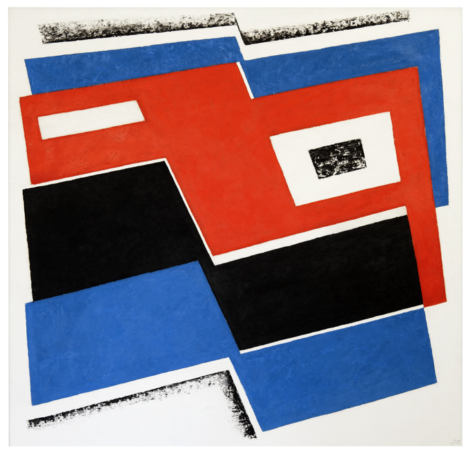

Chance, Order, Change at the Barber Institute of Fine Arts

Josef Albers, ‘Construction in Red-Black-Blue’, 1939, ©The Josef and Anni Albers Foundation/ VG Bild-Kunst, Bonn and DACS, London 2015. ABSTRACT PAINTINGS 1939 – 1989 Josef Albers, Bridget Riley, Victor Pasmore, Ad Reinhardt and Sean Scully: some of the most influential artists of the later 20th century feature in this exciting exhibition, which forms the centrepiece of … [Read more…]